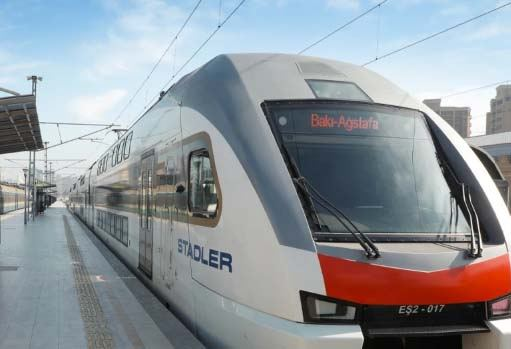

Əsas səhifə > Xəbərlər >
Bakı-Ağstafa-Bakı marşrutu üzrə əlavə qatar reysləri təyin edilir

Bakı. Trend: “Azərbaycan Dəmir Yolları” QSC Bakı-Ağstafa-Bakı marşrutu üzrə artmaqda olan sərnişin tələbatı ilə əlaqədar olaraq 19 və 20 avqust tarixlərinə hər iki istiqamət üzrə əlavə qatar reysləri təyin edir. Trend xəbər verir ki, saat 08:25-də qatar Bakıdan Ağstafa istiqamətinə, saat 17:10-da isə qatar Ağstafadan Bakı istiqamətinə yola düşəcək. “Bundan əlavə, Bakı-Ağstafa-Bakı marşrutu üzrə qatarlarımız ənənəvi qrafiklə hər gün Bakıdan saat 08:45-də, Ağstafadan isə 18:15-də yola düşür”, - məlumatda qeyd olunur.
Ən son yeniliklərdən xəbərdar olmaq üçün bizi izləməyi unutmayın.
Xəbərin tamamını oxumaq üçün buraya klik edin.